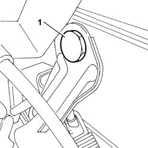
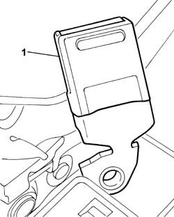

7065B14 REAR SEAT BELT ANCHORAGE ROD , (ONE), LEFT OR RIGHT - R.R.
- Path
- Procedures > 70 FITTINGS > 7065 SAFETY BELTS AND ACCESSORIES > 7065B REAR SAFETY BELTS > 7065B14 REAR SEAT BELT ANCHORAGE ROD , (ONE), LEFT OR RIGHT - R.R.
- Kind
- repair procedure (removal / refitting; the operation number is the code)
- Applies to
- all engines; all production periods
- Interactive page
- https://sloeber94.github.io/elrnDB-fUlss/en/#/179007943
Applies to: all engines; all production periods
 Removing
Removing
 Refitting
RefittingOp. 7050A98 QUICK RELEASE PASSENGER COMPARTMENT REAR SEATS - R.R.
- Undo the rear bolts fixing the guide support and move it away from the work area.
1. Undo the bolts fixing the mounting rod to the frame.

Applies to: all engines; all production periods
1. Remove the mounting rod for one of the rear seat belts.

Applies to: all engines; all production periods
Refitting
Removing- Fit the mounting rod for one of the rear seat belts.
- Tighten the bolts fixing the mounting rod to the frame.
- Fit the guide support.
- Tighten the bolts fixing the guide support to torque.
Op. 7050A98 QUICK RELEASE PASSENGER COMPARTMENT REAR SEATS - R.R.